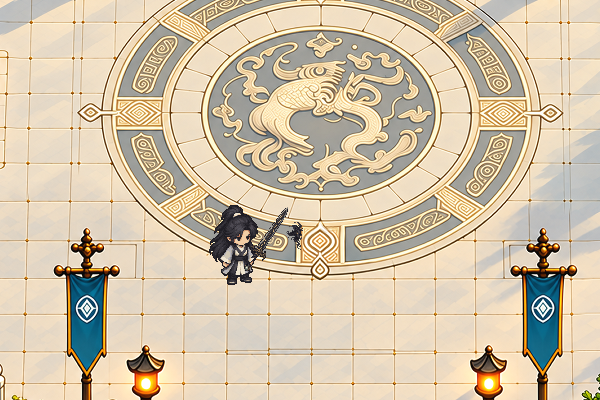
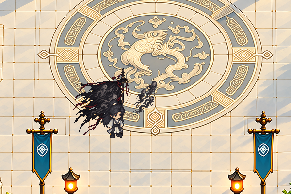
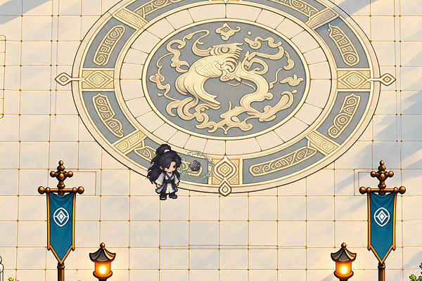
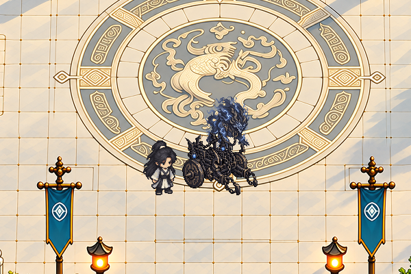

Tiên kiếm · Hứa Lập Quốc

Body live + pháp bảo/FX tĩnh · camera 1×.
VƯƠNG LÂM · NGHIÊN CỨU PHÁP BẢO 02
Kiếm linh Hứa Lập Quốc, Thập Ức Tôn Hồn Phiên, Thiên Nghịch châu và Xạ Thần Xa mở bốn hướng biểu hiện khác nhau. Lấy chi tiết đã đọc trong truyện làm điểm tựa, thiết kế hình mới cho game và đặt cạnh đúng thân Vương Lâm live.
CHI TIẾT TRUYỆN → THIẾT KẾ CHO GAME
Phần “Đã đọc trong truyện” ghi căn cứ nguồn. Phần “Thiết kế mới” nói rõ màu, vật liệu, silhouette và cách đăng ký do ta đề xuất. Nguồn lớn và composite native luôn đặt cạnh nhau; hình mới còn chờ owner review.
Sheet nguồn có hai panel: bên trái là pháp bảo, bên phải là concept FX. Native trích chúng thành file riêng; FX hiện là ảnh tĩnh, bật/tắt độc lập ở phần đối chiếu.
NATIVE BODY · ARTIFACT LAYERS
2× nearest. Chọn 1× để đọc món ở cỡ chơi; cuộn ngang trên màn nhỏ.
FX tĩnh riêng → rear artifact → body live → front artifact. Tắt Pháp bảo và FX để xem đúng body-only. Layer chỉ đăng ký cho neutral Đông Nam. Chiến xa là món triển khai cạnh người, có footprint/neo riêng cần thiết kế về sau; vị trí preview chưa phải collider hoặc spawn.
NỀN VÂN NGỌC ĐÃ DUYỆT · SO CỠ NATIVE
Ảnh bake tĩnh từ crop nền hiện hành: 600 × 400 pixel, hiển thị đúng 600 × 400 CSS pixel. Dùng để đọc silhouette/màu/scale; chưa kiểm mái/tán che, occlusion động, footprint hoặc collision. Cuộn ngang mỗi ảnh trên màn nhỏ.

Body live + pháp bảo/FX tĩnh · camera 1×.

Form hiển thị cô đọng; không áp kích thước cờ canon.

Châu/FX concept tách body; chưa có orbit hoặc nội giới.

Form chuyển thể scene; root/footprint triển khai chưa chốt.
MỘT NGƯỜI · NHIỀU TRỤC DIỆN MẠO
Sáu họ áo dưới đây là đề xuất mới cho game, chưa tạo ART. Tên vai trò/giai đoạn giúp chọn brief; không khẳng định đây là y phục canon của Vương Lâm hoặc quyền trang bị đã mở. Đầu, mặt, tóc, anatomy và chân vẫn giữ chuẩn live.
Áo xám/ngà gọn, một viền ngọc và đai tối. Là họ đầu tiên để thử giữ một người khi đổi chi tiết.
Hợp hướng:Thiết kiếm đơn giản · châu cầm tay.
Áo khoác lệch vai, tà ngắn và túi phẳng. Chi tiết được đọc qua khối dây/túi thay cho phủ sáng.
Hợp hướng:Kiếm linh · Thiên Nghịch châu kín đáo.
Hộ thủ nhỏ, vạt lệch theo nhịp chân và vai không nở. Giữ khoảng âm để kiếm và tay cùng đọc được.
Hợp hướng:Tiên kiếm có kiếm linh Hứa Lập Quốc.
Tay áo vừa, tà có nhịp, một dấu niêm đỏ. Khí/hồn nằm ngoài body để tắt vẫn đọc đúng người.
Hợp hướng:Thập Ức Tôn Hồn Phiên.
Cổ áo rõ, vạt đối xứng và một vài nét mây lớn. Hào quang là layer tĩnh/motion riêng theo production.
Hợp hướng:Thiên Nghịch châu · pháp bảo điều khiển.
Vai nhỏ, cổ tay chắc, tà tránh dây xích. Thế điều khiển và bố cục chiến xa tạo sức nặng riêng.
Hợp hướng:Xạ Thần Xa triển khai trong scene.
| Họ áo | Kiếm linh | Hồn phiên | Châu nội giới | Chiến xa | Motion / layer phải kiểm |
|---|---|---|---|---|---|
| Nhập môn | Ưu tiên | Thử sau | Ưu tiên | Thử sau | Giữ pose live; đai/túi đúng hướng |
| Du hành | Ưu tiên | Phối trầm | Ưu tiên | Thử sau | Run, túi bên hông, dây trước/sau |
| Kiếm linh | Ưu tiên | Thử sau | Phối nhẹ | Thử sau | Grip, cổ tay, tà trong combo |
| Dẫn hồn | Phối trầm | Ưu tiên | Phối nhẹ | Thử sau | Tay kết ấn, cán cờ, vải/hồn riêng |
| Nội giới | Phối nhẹ | Thử sau | Ưu tiên | Thử sau | Tay áo, kết ấn, châu orbit riêng |
| Chiến trận | Phối gọn | Phối trầm | Phối nhẹ | Ưu tiên | Động tác điều khiển, root/footprint chiến xa |
“Ưu tiên” là hướng mỹ thuật để làm prototype, chưa là compatibility/entitlement trên server. Áo không tự đổi stat, skill, cảnh giới hoặc nhận diện mặt.
REFERENCE THỊ TRƯỜNG & SOURCE CỤC BỘ
Bagua Jade, Eye of Providence và Mythical Gourd có khả năng khác nhau; artifact spirits có thể đồng hành chiến đấu. Đây là căn cứ để học pháp bảo như một trải nghiệm riêng.
Suy luận cho game: phân biệt cách dùng và nhịp hiện diện của bốn món; không suy cấu trúc sprite/layer từ mô tả.
Trang chính thức trên Steam →Mô tả ngũ hành, thần thông/công pháp, pháp bảo/đan dược và phối vật liệu luyện pháp bảo. Món đồ có thể gắn với nhiều lựa chọn build.
Suy luận cho game: tách nhận diện món, cách dùng và FX để tạo nhiều tổ hợp; chưa kiểm gameplay hoặc wardrobe nguồn.
Trang chính thức trên Steam →Kiếm Tu Luyện Khí có 47 biến thể kiếm; Thương Tu có 22 biến thể thương. Grip/tip thay theo hướng và frame, weapon–body–FX có layer cùng timeline.
Học cách tổ chức. Nguồn ngoài không thay Pixel02 làm anatomy; quạt/hồ lô v1 và bốn thiết kế v2 là hình mới.
Ảnh đã xem & bằng chứng →
Bài 墨隐千机 mô tả mực đen/xanh, áo kim loại–lụa, hộp cơ quan ở chân, ô cơ quan sau lưng, nỏ nam/cung nữ và diều cơ khí. Đây là bộ phối áo–vũ khí–vật đi cùng có chung chủ đề.
Đề xuất mới cho Vân Hải: thử họ du hành cơ quan với một part lưng và một dụng cụ hông; giữ mặt/tóc/anatomy live. Chưa tạo áo hoặc companion.
Nguồn chủ sở hữu · bài 小师妹 →


Bài nguồn nêu mười ba kim đỏ, vòng lửa, xích ngọc xanh và thú sen. Các hình kim–vòng–xích gợi ba kiểu hiển thị khác nhau, thay vì chỉ đổi màu một món.
Ảnh remote thuộc chủ sở hữu gốc, dùng để tham khảo; không copy thành asset game. Phần mô tả dựa trên text bài nguồn, chưa audit pixel/animation các hình.
Nguồn chủ sở hữu · bài 大衍神君 →Các bài khác nêu ngọc như ý đầu sói, bát hồn đen, ngọc bội xanh; chuông hồn đồng, vệt máu, quạt lửa bảy lông và châu đỏ–đen.
Đề xuất mới cho Vân Hải: họ vật liệu đồng cổ/đá xám/giấy niêm có hình chính riêng, đổi activeFX theo cách dùng. Những món này là reference thị trường, không là pháp bảo canon Vương Lâm.
CHỐT NHÌN → KHÓA VIEW → SẢN XUẤT MOTION
Chốt silhouette/scale, body-only và alpha tại 1×. Với hồn phiên/chiến xa, xác định rõ phần nằm trong actor và phần triển khai scene.
Đối chiếu Vương Lâm cùng hướng. Grip/tip, trước/sau, orbit hoặc footprint có metadata riêng, không dùng mirror để tuyên bố đủ bộ.
Kiếm chém, cờ triển khai, châu kết ấn, chiến xa triệu hồi: bốn brief khác nhau. Clock/timeline đồng bộ; giữ body, weapon, vải, hồn, xích và FX riêng.
Sau review production mới nối quyền trang bị/server facts. Kiểm đổi món, lifecycle, mái/tán, cancel và reload trên fixture riêng.
Pháp bảo và FX đang là concept tĩnh riêng, chờ duyệt; chưa animation, runtime hoặc wardrobe mới. Không sửa map owner, navigation, blocker, station/receipt, DB/save hoặc thông số chiến đấu.